Nyzo version 575 (commit on GitHub) modifies the client cycle transaction commands for blockchain version 2.
This version affects the client only.
When blockchain updates are made, the core code that handles processing of blocks and balance lists must retain knowledge of prior blockchain versions. While this is not necessary for verifiers that are building the blockchain, it is necessary for the client and for anyone wanting to use the code to work with the historical blockchain.
However, the client commands that interact with the cycle do not need legacy functionality. The blockchain has successfully updated to version 2, so client commands for versions less than 2 no longer have any usefulness.
This version updates the client commands for cycle transactions to support version 2 of the blockchain, replacing the commands for equivalent functionality in version 1 of the blockchain.
The changes in the Block class are inconsequential. Indentation was corrected, a line of whitespace was added to improve readability, and blockHeight was added to a print statement.
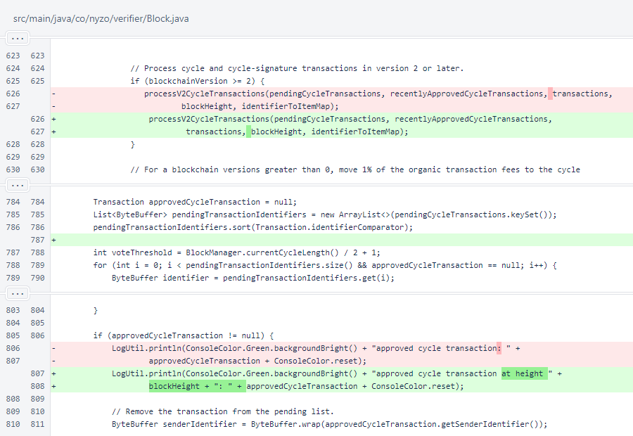A comment was added to MeshListener.
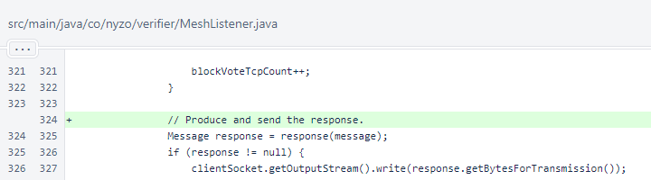In Transaction.getByteSize(), a confusing reassignment of size was eliminated to improve code readability.
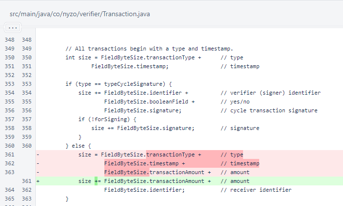In ClientTransactionUtil.sendTransactionToLikelyBlockVerifiers(), the identifier and IP address are now displayed for null responses. Also, the wait for a block to be received is now limited to 30 seconds, and periodic feedback is now provided.
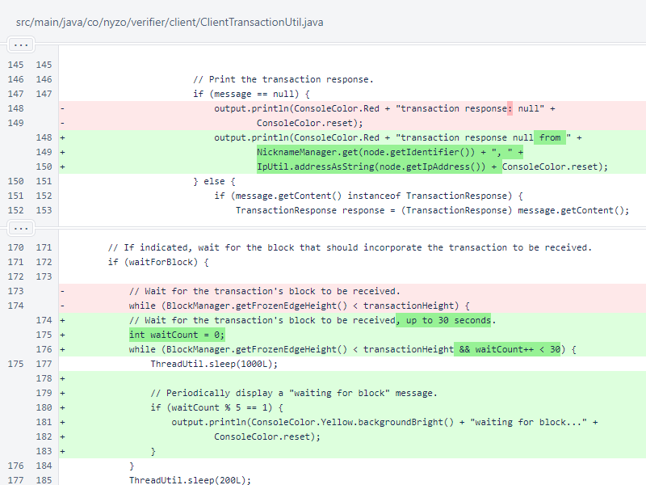The version 2 blockchain allows for a much simpler CycleTransactionListCommand. An in-cycle verifier key is no longer required to fetch pending transactions. Pending cycle transactions are now stored in the balance list. This command no longer accepts any arguments, so validation is no longer required.
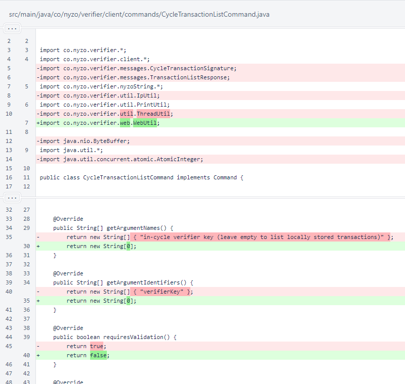The command is not long running now, and the validation logic was eliminated.
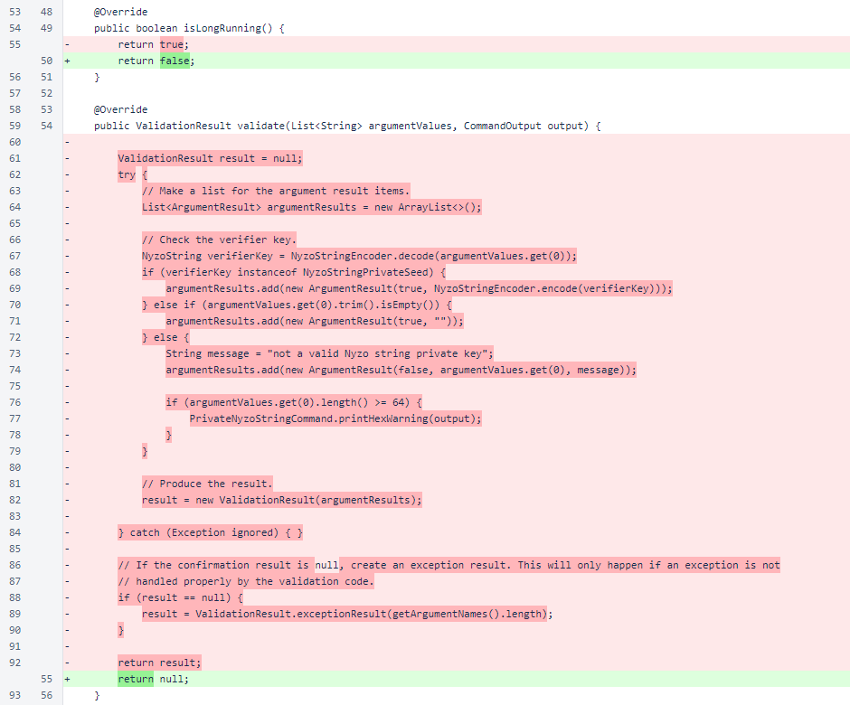In CycleTransactionListCommand.run(), querying of the list of cycle transactions was removed.
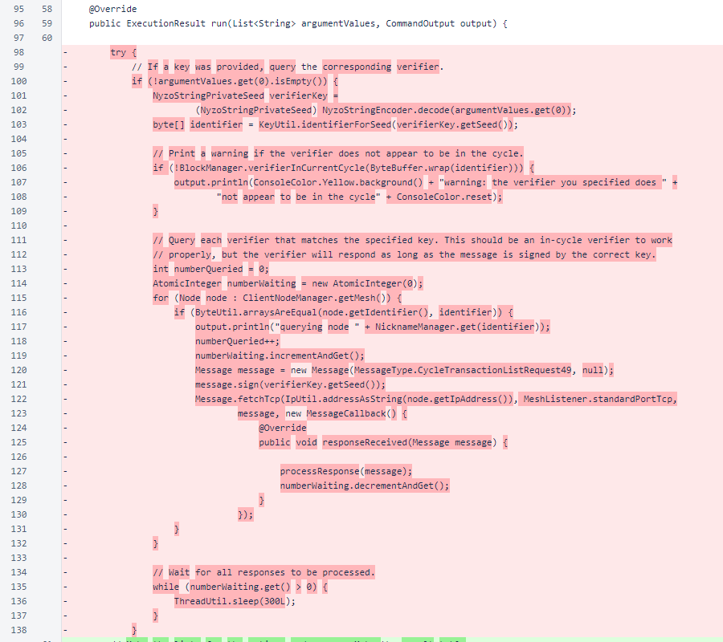CycleTransactionListCommand now produces an immediate result, so it now uses a CommandTable to present the result. The table is made and headers are added. The BalanceList of the frozen edge is retrieved. An error is added if the balance list cannot be retrieved, and a notice is added if the balance list contains no pending cycle transactions.
The CycleTransactionManager is no longer used by the client, so the call to CycleTransactionManager.performMaintenance() was eliminated. All of the old code for building the output table from the local list was removed in favor of code that builds a table from the cycle transactions stored in the balance list.
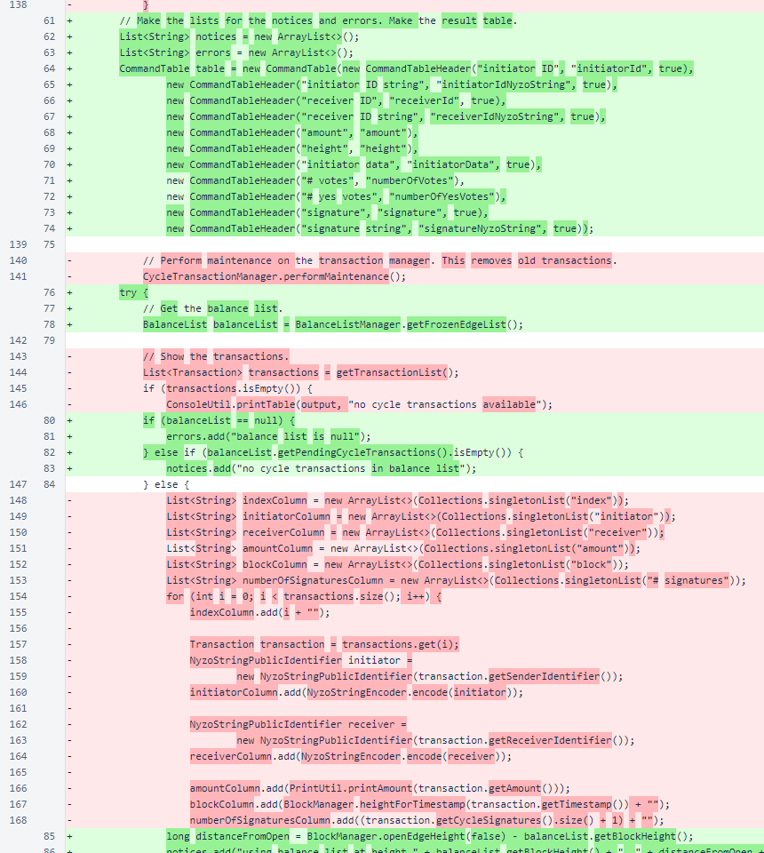A notice is added with the height and distance from open edge of the balance list used. A row is added for each pending cycle transaction.
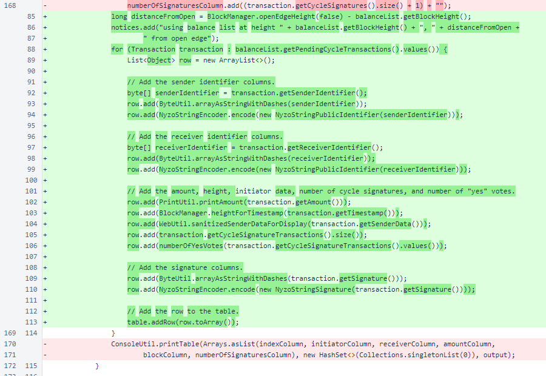A SimpleExecutionResult is returned from the CycleTransactionListCommand.run() method. This provides good support for both the web interface and API.
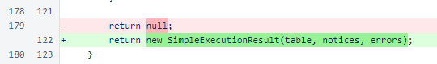The CycleTransactionListCommand.processResponse() method was used to register transactions from the TransactionListResponse. It is no longer needed.
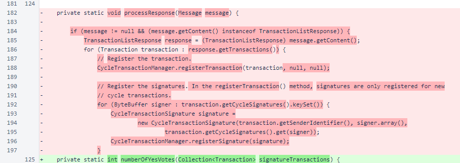CycleTransactionListCommand.getTransactionList() was removed. Cycle transactions are now available as a consistently ordered list inside the balance list. CycleTransactionListCommand.numberOfYesVotes() provides the count of affirmative votes for each transaction. Verifiers may change their vote for a transaction at any time before approval, and affirmative and negative votes are both allowed.
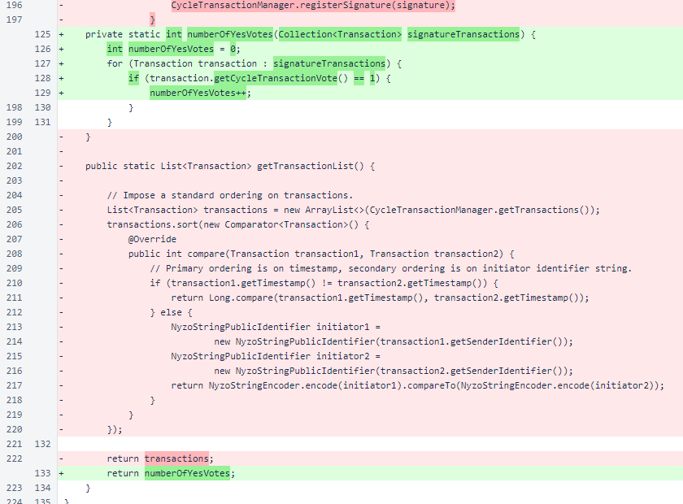The blockHeight argument was removed from CycleTransactionSendCommand. Previously, cycle transactions were scheduled far in advance so that signatures could be collected and bundled with the transaction in the target block. Now, cycle transactions are included without signatures, and signatures are registered in later blocks.
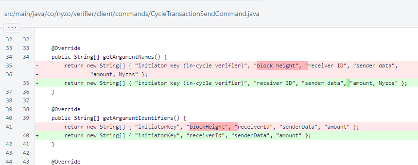In CycleTransactionSendCommand.validate(), validation of blockHeight was removed.
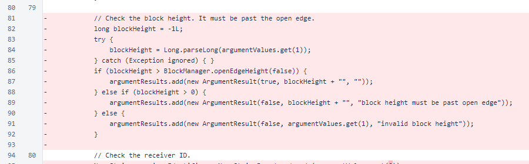Removal of the blockHeight argument in CycleTransactionSendCommand.validate() caused later argument indices to shift back by one position.
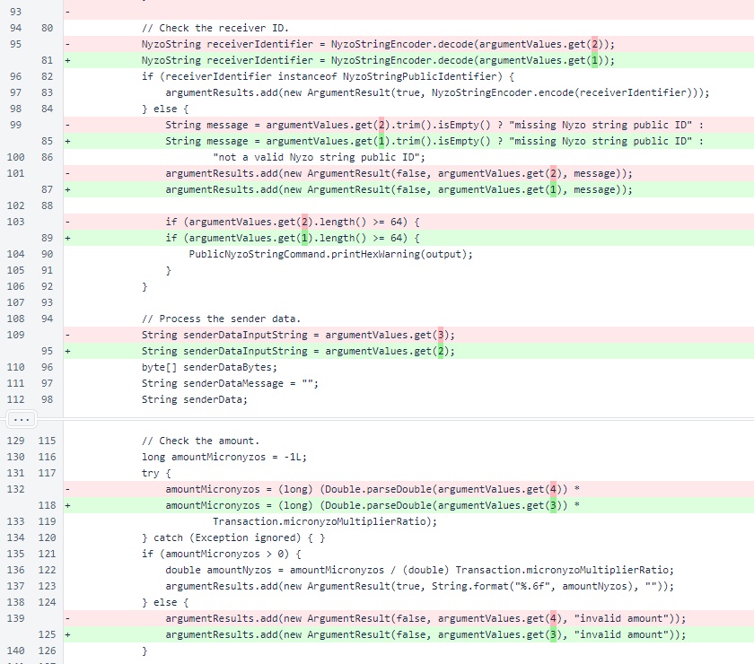CycleTransactionSendCommand.run() now sends the transaction to likely block verifiers only, not to the entire cycle. The ClientTransactionUtil.suggestedTransactionTimestamp() method is the same method used to choose a timestamp for standard transactions.
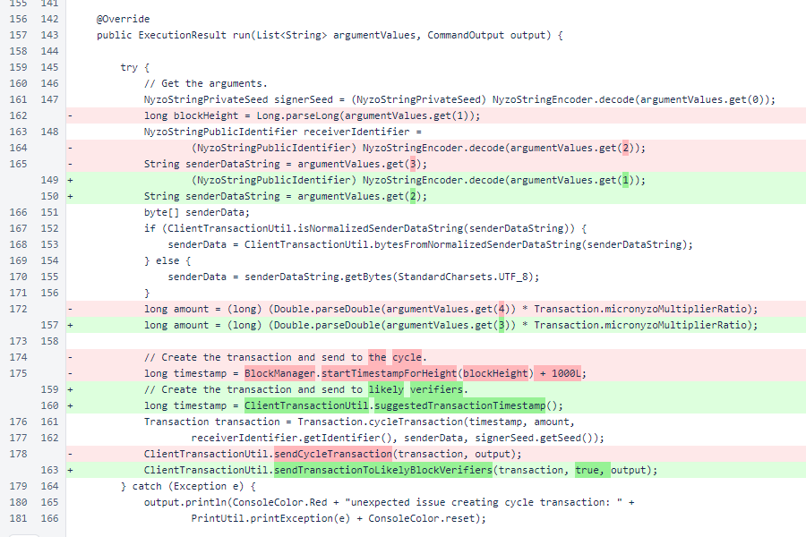CycleTransactionSignCommand now accepts a transaction signature in lieu of an index. It also now accepts a vote, 1 to vote for the transaction or 0 to vote against the transaction. A vote against the transaction does not affect approval except when it is used to revoke a prior vote for the transaction.
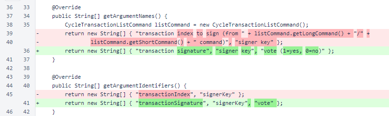In CycleTransactionSignCommand.validate(), the transaction list is no longer needed, and the index is no longer provided. The signature is only checked to be a valid Nyzo signature string.

The logic checking the signer key is unchanged. This is an indentation change.

The vote is required to be 1 or 0. The transaction is no longer retrieved from a list, so transaction properties are no longer displayed.
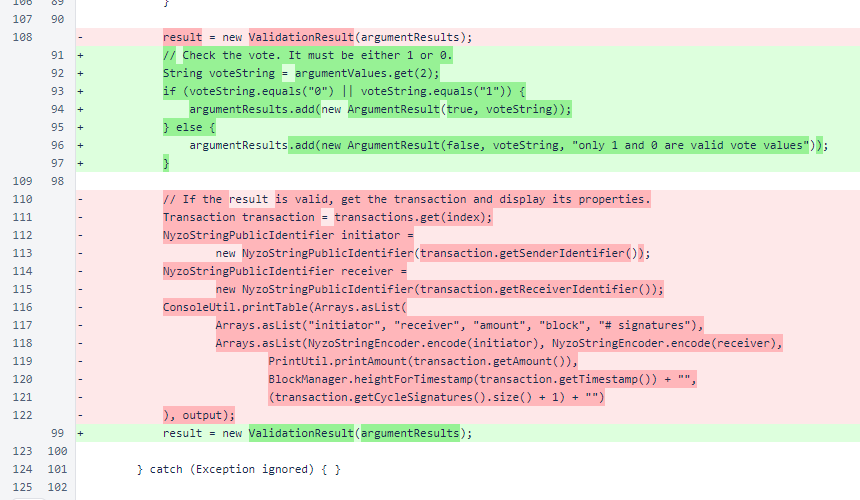In CycleTransactionSignCommand.run(), the arguments are retrieved, the cycle-signature transaction is built, and the transaction is sent to likely verifiers. Like cycle transactions, cycle-signature transactions are now included in the blockchain immediately, so the transaction does not need to be sent to the entire cycle.
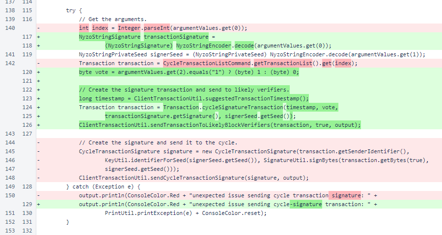A misspelling was corrected in SentinelController.
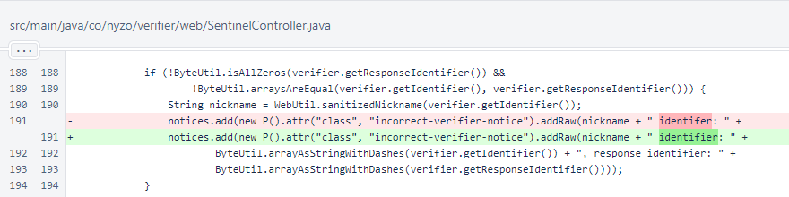